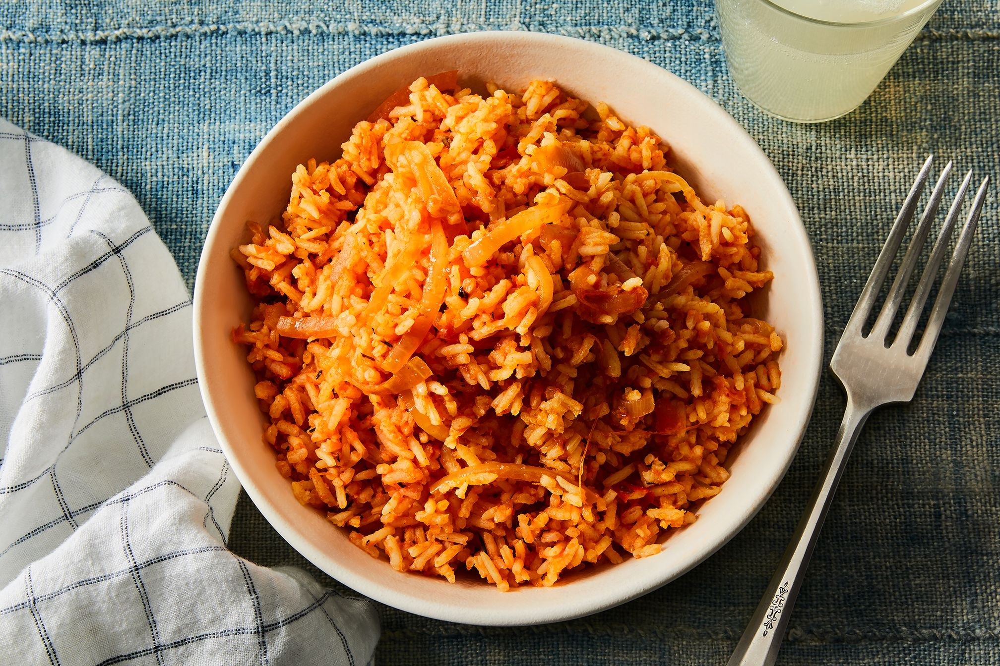

Jollof Rice
Jollof rice is an african giant on its own, serving as one of the most prominent dishes
around the world and a traditional dish for the countries of west africa. It is orange
in color but a rainbow of flavors.
Ingredients
- 1 tablespoon olive oil
- 1 large onion, sliced
- 2 (14.5 ounce) cans stewed tomatoes
- ½ (6 ounce) can tomato paste
- 1 teaspoon salt
- ¼ teaspoon black pepper
- ½ teaspoon red pepper flakes
- 1 tablespoon Worcestershire sauce
- 1 teaspoon chopped fresh rosemary
- 2 cups water
- 1 (3 pound) whole chicken, cut into 8 pieces
- 1 cup uncooked white rice
- 1 cup diced carrots
- ½ pound fresh green beans, trimmed and snapped into 1 to 2 inch pieces
- ¼ teaspoon ground nutmeg